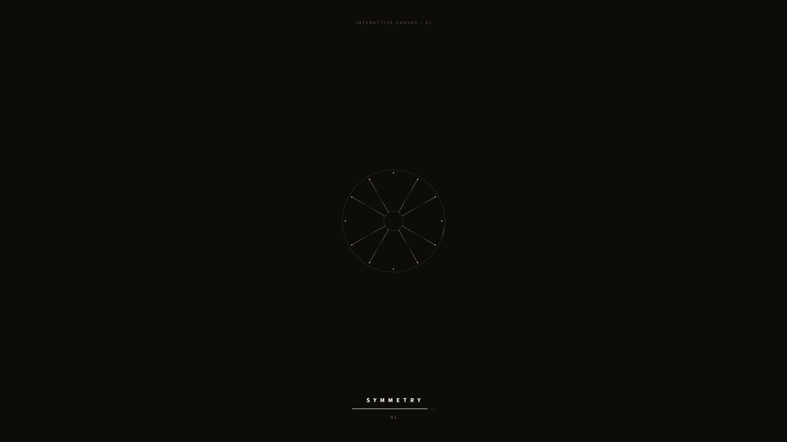
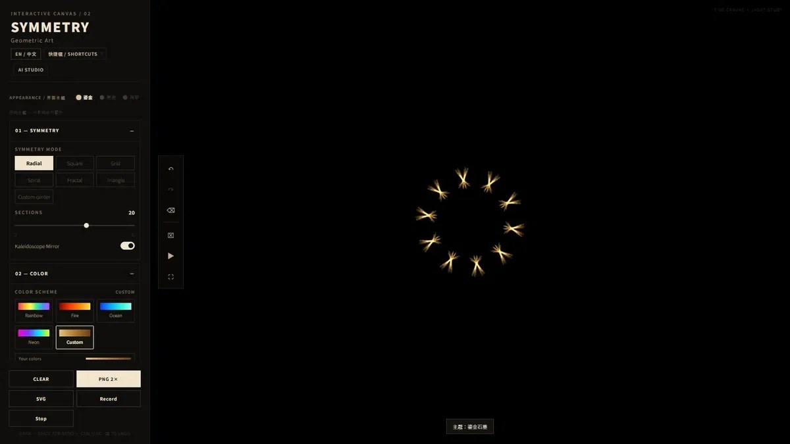
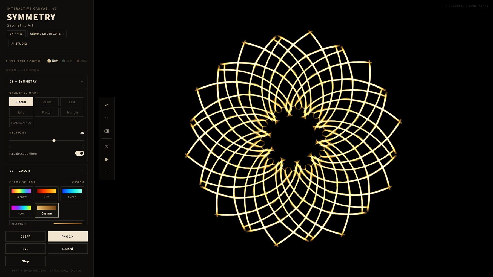
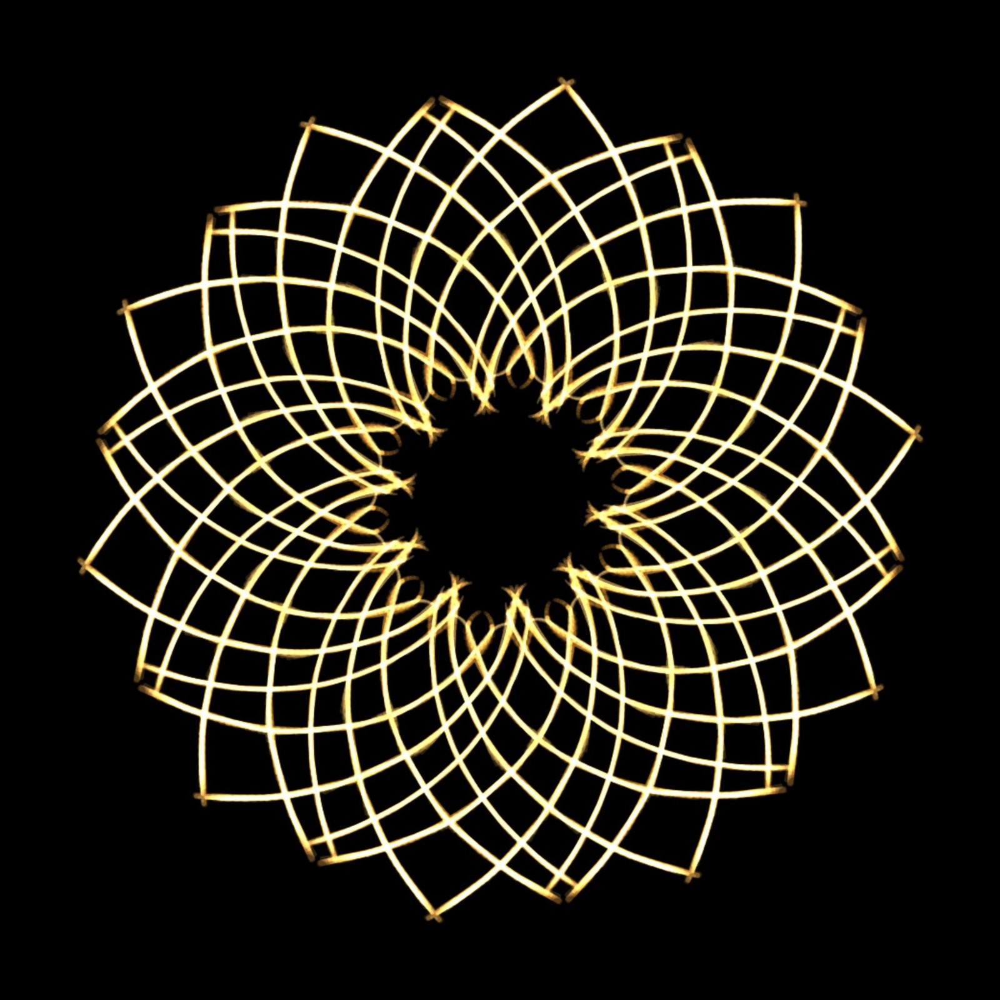

Work 01
Digital Media Technology — 2026
Symmetry — Geometric Drawing
A drawing instrument where a single stroke is mirrored into radial symmetry, so the image accumulates as a pattern rather than a gesture. Its rules were drafted with AI models and then edited by hand, which is how the software became part of the drawing rather than a tool around it.



